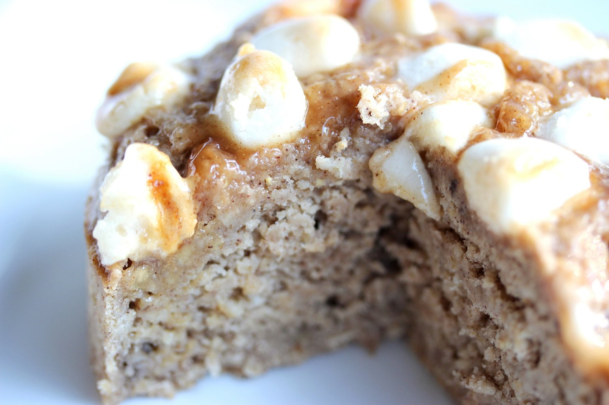
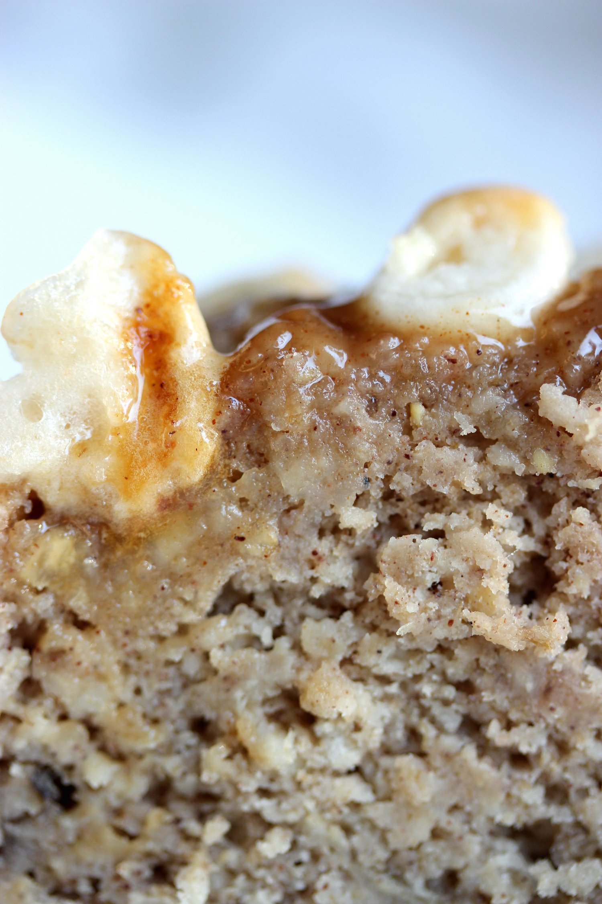
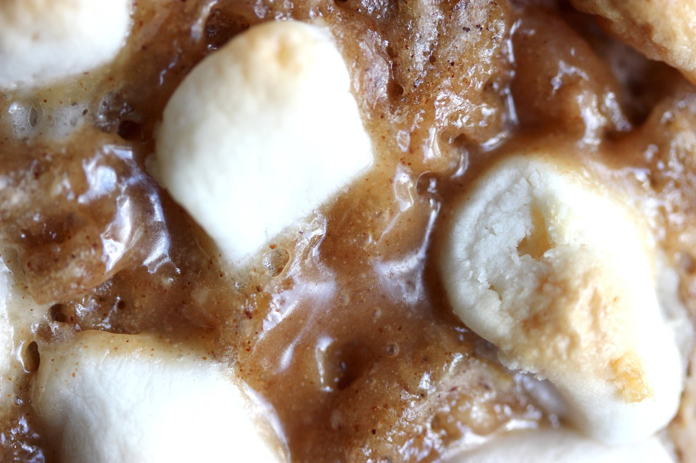
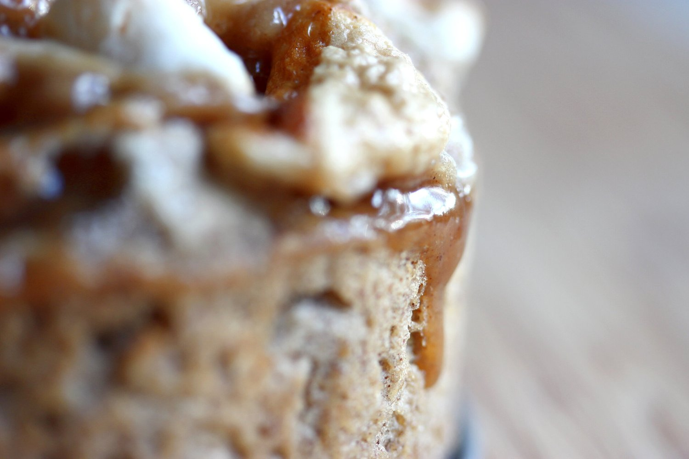

Toasted Marshmallow Caramel Cake (vegan, gluten free)




Nothing is more heavenly than the flavor combinations of a marshmallow caramel cake, especially when you know it's healthy! This moist, sweet cake is completely vegan, gluten free, and refined sugar free. Enjoy this sweet treat for dessert, a snack, or even a cozy breakfast with a warm beverage!
A good cake is all about good texture. You'll never ever find me touting nasty, dry cake. If you've made my banana bread recipe, you'll understand me on this. This toasted marshmallow caramel cake is definitely no exception. I'm a sucker for moist cake. Just look at the beauty of it! Besides the sweet, soft cakey aspect the toppings are where the party really is. A sweet, creamy caramel river flowing through the crisp toasted marshmallows. This is the truest gift of happiness. Give this recipe a shot and tell me what you think! I'll just smile, implying through my expression that "I told you so." This recipe is gluten free, vegan, and refined sugar free. So feel free to enjoy as you please. :)
Toasted Marshmallow Caramel Cake
Serves: 4
Cake Batter
-
1 ripe banana, mashed
-
1/2 cup raw oats, ground into a flour
-
1/4 cup buckwheat flour*
-
1 tsp baking powder
-
1/2 tsp cinnamon
-
1/4 cup unsweetened almond milk
Topping
-
1 TBSP brown rice syrup
-
1/2 TBSP almond butter
-
1 oz mini marshmallows (18-20 marshmallows)
Preheat the oven to 350 F. In a bowl, mash the banana to a puree. Then add the batter's dry ingredients and mix well. Slowly stir in the almond milk until a batter consistency is reached. Spray a mini springform pan with nonstick spray and pour the cake batter in.**
Prepare the caramel swirl by mixing the brown rice syrup and almond butter. Drizzle on top of the cake batter and lightly swirl around. Then top the batter with mini marshmallows. Bake at 350 F for 25-30 minutes, until the marshmallows are lightly browned and the cake is fully baked through. You can use a toothpick to tell if the center is baked and firm. Let cool, then cut into 4 slices. Enjoy!!!
Nutritional Information for 1 serving: 144 calories; 2 g fat, 29 g carbs (3 g sugar, 11 g fiber), 3 g protein.
*More oats as a substitution for buckwheat flour, or spelt flour as a substitution will work. The recipe's ratio of flours works best for a good texture, but the substitutions work well too!
**You could also use a mini loaf pan. Alternatively, you could double the recipe and use a bread loaf pan or a normal-sized cake pan. But baking times will vary.